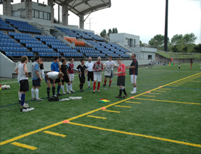

"I found the Level 1 Club Coach course absolutely superb. I actually did the Level 2 course before I did the Level 1, but to go back and dissect the fundamentals of football education was a real eye-opener for me. The most important lesson I learnt on the course is to "let the game be the teacher" - too many coaches nowadays seem to like the sound of their own voice - let the kids play and they will learn. Talk, talk, talk and they'll switch off. I would highly recommend this course to anyone with an interest in sport education, child psychology, or to people just interested in studying something utterly rewarding (for this course it doesn't matter if you have a background in football or not)."
"I found the Level 1 Club Coach course absolutely superb. I actually did the Level 2 course before I did the Level 1, but to go back and dissect the fundamentals of football education was a real eye-opener for me. The most important lesson I learnt on the course is to "let the game be the teacher" - too many coaches nowadays seem to like the sound of their own voice - let the kids play and they will learn. Talk, talk, talk and they'll switch off. I would highly recommend this course to anyone with an interest in sport education, child psychology, or to people just interested in studying something utterly rewarding (for this course it doesn't matter if you have a background in football or not)."
Jon Day. FA Level 1 Club Coach License Holder.
"I was actually the first candidate on the Level 1 course to hear I'd passed and being that I was the only female and probably (although not definitely ; ) had the least amount of firsthand experience of football's skills and techniques, I was chuffed to bits. The great thing about this course is it doesn't make a blind bit of difference how much football you have or haven't played, or how much actual coaching experience you may or may not have had. In fact some veteran coaches had picked up 'bad habits' that needed addressing during the course, but for me the course developed me from scratch in a way that was logical, easily digestible, practical and basically just made sense. That said, the most impressive part for me was that it was actually fun! How many courses can you say that about!!"
Paco Hanaoka-Lloyd. FA Level 1 Club Coach License Holder.
"The Level 1 course provides a real structure and solid foundation for new coaches, as I was at the time, to develop from. I think even if I wasn't planning a career in coaching football I'd still have taken this course, because it addresses so much more than just football coaching; like child welfare, psychology and physical development. This course definitely had a profound effect on my approach to coaching & the games and drills you learn are so much fun (for coaches and the kids!!), but, and I hadn't really counted on this, I learnt a lot about myself - my own strengths and weaknesses as an educator and a person and I learnt to empathize more with young minds and how they work and this is key to being a good role-model, teacher, coach, educator, parent - basically a good adult."
Michael Yeomans. FA Level 1 Club Coach License Holder.